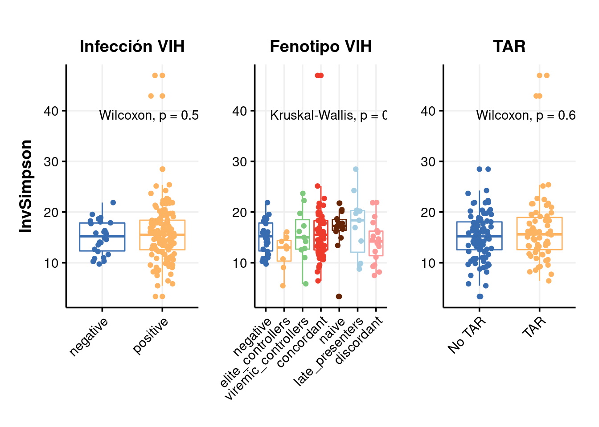
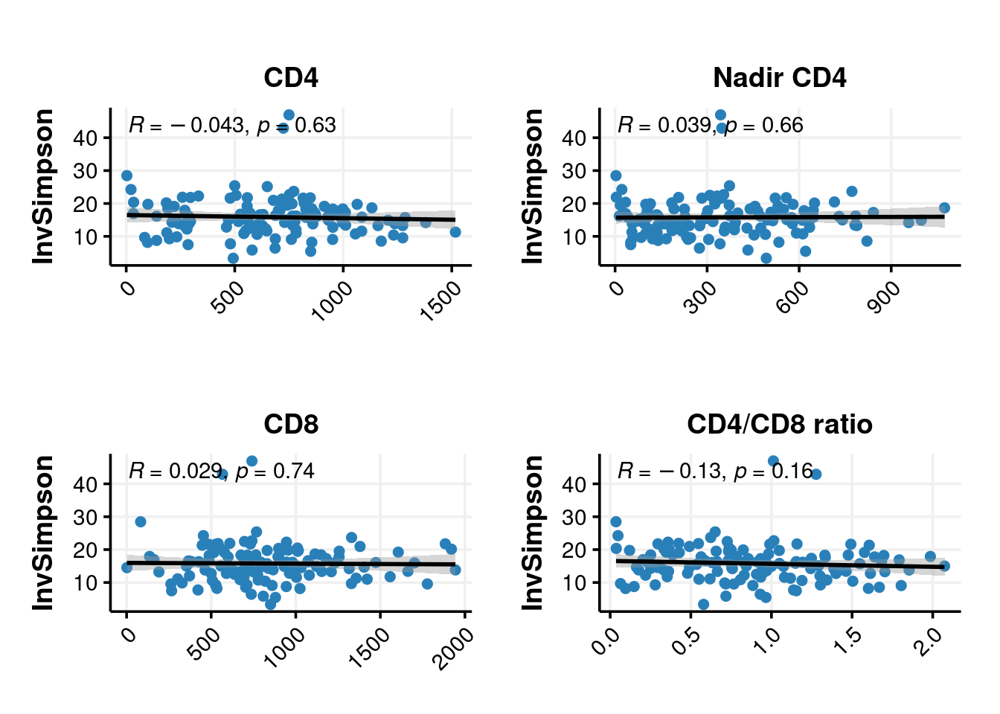
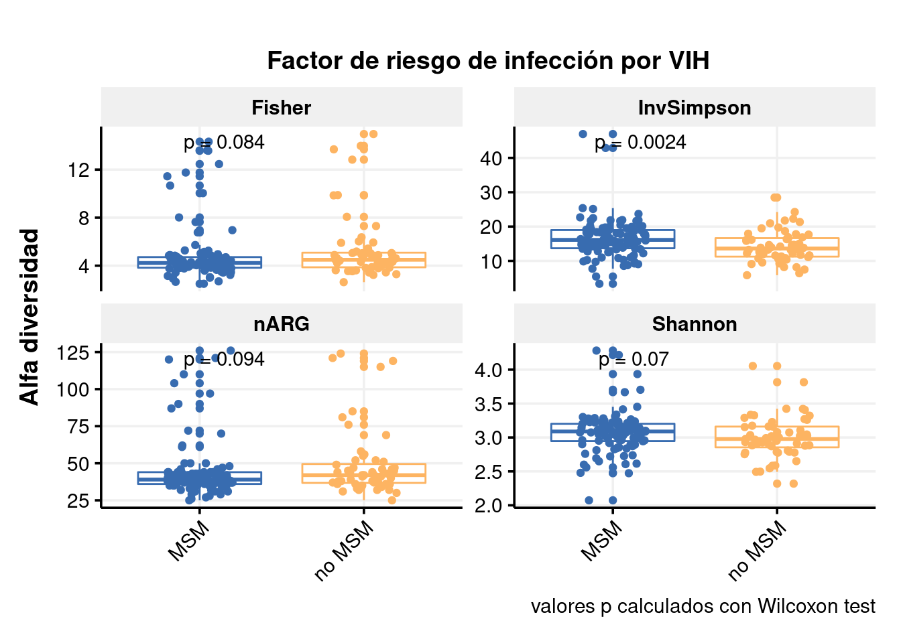
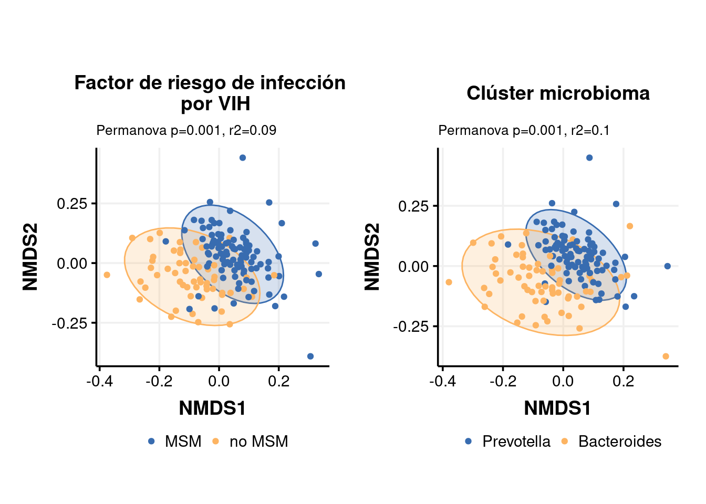
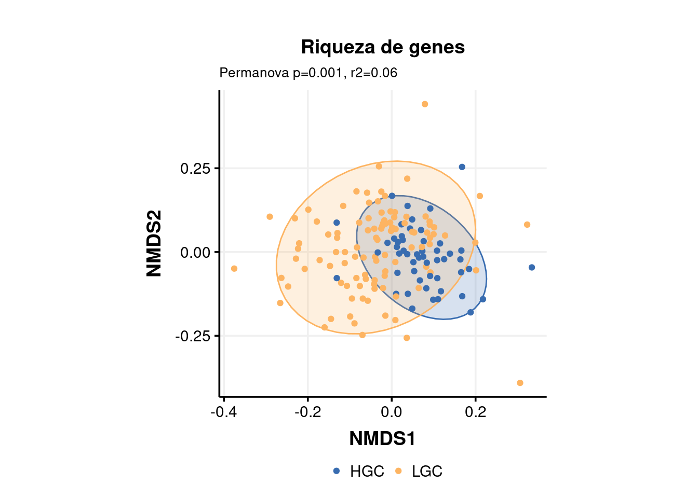
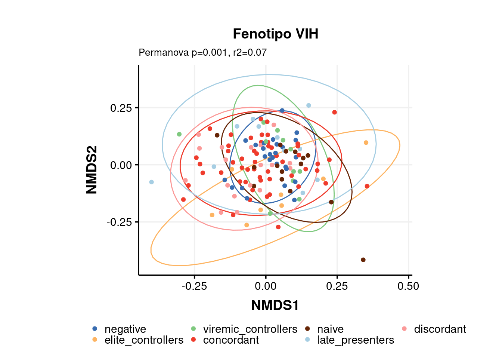

Last updated: 2022-12-23
Checks: 6 1
Knit directory: 2022_Rubio_MetaHIV/
This reproducible R Markdown analysis was created with workflowr (version 1.7.0). The Checks tab describes the reproducibility checks that were applied when the results were created. The Past versions tab lists the development history.
The R Markdown file has unstaged changes. To know which version of
the R Markdown file created these results, you’ll want to first commit
it to the Git repo. If you’re still working on the analysis, you can
ignore this warning. When you’re finished, you can run
wflow_publish to commit the R Markdown file and build the
HTML.
Great job! The global environment was empty. Objects defined in the global environment can affect the analysis in your R Markdown file in unknown ways. For reproduciblity it’s best to always run the code in an empty environment.
The command set.seed(20220202) was run prior to running
the code in the R Markdown file. Setting a seed ensures that any results
that rely on randomness, e.g. subsampling or permutations, are
reproducible.
Great job! Recording the operating system, R version, and package versions is critical for reproducibility.
Nice! There were no cached chunks for this analysis, so you can be confident that you successfully produced the results during this run.
Great job! Using relative paths to the files within your workflowr project makes it easier to run your code on other machines.
Great! You are using Git for version control. Tracking code development and connecting the code version to the results is critical for reproducibility.
The results in this page were generated with repository version 0145fcb. See the Past versions tab to see a history of the changes made to the R Markdown and HTML files.
Note that you need to be careful to ensure that all relevant files for
the analysis have been committed to Git prior to generating the results
(you can use wflow_publish or
wflow_git_commit). workflowr only checks the R Markdown
file, but you know if there are other scripts or data files that it
depends on. Below is the status of the Git repository when the results
were generated:
Ignored files:
Ignored: .Rhistory
Ignored: .Rproj.user/
Ignored: analysis/.Rhistory
Ignored: output/aribaData/
Ignored: output/grootData/
Untracked files:
Untracked: PEC3/alpha_div_nosig.png
Unstaged changes:
Modified: analysis/PEC3.Rmd
Note that any generated files, e.g. HTML, png, CSS, etc., are not included in this status report because it is ok for generated content to have uncommitted changes.
These are the previous versions of the repository in which changes were
made to the R Markdown (analysis/PEC3.Rmd) and HTML
(docs/PEC3.html) files. If you’ve configured a remote Git
repository (see ?wflow_git_remote), click on the hyperlinks
in the table below to view the files as they were in that past version.
| File | Version | Author | Date | Message |
|---|---|---|---|---|
| Rmd | 0145fcb | Elisa_Linux | 2022-12-22 | change_pec3_figures |
| Rmd | 95e45d0 | Elisa | 2022-12-04 | pec3_themepublication |
| html | 95e45d0 | Elisa | 2022-12-04 | pec3_themepublication |
| Rmd | 94ec2b4 | Elisa_Linux | 2022-12-03 | guardia021222 |
| Rmd | beb29d3 | Elisa | 2022-11-28 | pec3 figures |
library(tidyverse)
library(kableExtra)
library(vegan)
library(ggpubr)
library(glue)
library(patchwork)
library(ggthemes)
library(grid)theme_Publication <- function(base_size=14, base_family="helvetica") {
(theme_foundation(base_size=base_size, base_family=base_family)
+ theme(plot.title = element_text(face = "bold",
size = rel(1), hjust = 0.5),
plot.subtitle=element_text(
size = rel(0.7)),
text = element_text(),
panel.background = element_rect(colour = NA),
plot.background = element_rect(colour = NA),
panel.border = element_rect(colour = NA),
axis.title = element_text(face = "bold",size = rel(1)),
axis.title.y = element_text(angle=90,vjust =2),
axis.title.x = element_text(vjust = -0.2),
axis.text = element_text(),
axis.line = element_line(colour="black"),
axis.ticks = element_line(),
panel.grid.major = element_line(colour="#f0f0f0"),
panel.grid.minor = element_blank(),
legend.key = element_rect(colour = NA),
legend.position = "bottom",
legend.direction = "horizontal",
legend.key.size= unit(0.2, "cm"),
legend.margin = unit(0, "cm"),
legend.title = element_text(face="italic"),
plot.margin=unit(c(10,5,5,5),"mm"),
strip.background=element_rect(colour="#f0f0f0",fill="#f0f0f0"),
strip.text = element_text(face="bold")
))
}
scale_fill_Publication <- function(...){
library(scales)
discrete_scale("fill","Publication",manual_pal(values = c("#386cb0","#fdb462","#7fc97f","#ef3b2c","#662506","#a6cee3","#fb9a99","#984ea3","#ffff33")), ...)
}
scale_colour_Publication <- function(...){
library(scales)
discrete_scale("colour","Publication",manual_pal(values = c("#386cb0","#fdb462","#7fc97f","#ef3b2c","#662506","#a6cee3","#fb9a99","#984ea3","#ffff33")), ...)
}load("output/summarized_ariba.RDA")
load("output/ariba_dist.RDA")
ART_groups<-c("concordant", "discordant ", "early_treated")
gene_richness<-read.delim2("data/Metadata/generichness_data.txt")%>%
select(SampleID, GCount)
metadata<-read_csv("data/Metadata/metadata.csv")%>%
mutate(ratio_CD4_CD8=CD4_absolute/CD8_absolute,
ART=ifelse(Profile %in% ART_groups, "TAR", "No TAR"),
MSM_dic=ifelse(RiskGroup2=="msm", "MSM", "no MSM"),
Profile=factor(Profile, levels = c("negative", "elite_controllers", "viremic_controllers",
"early_treated ", "concordant", "naive", "late_presenters",
"discordant")))%>%
inner_join(gene_richness, by="SampleID")alpha_div<-function(d_rpkm, d_counts, metadata){
shannon<-diversity(d_rpkm[ ,-1], MARGIN = 2, index="shannon")
simpson<-diversity(d_rpkm[, -1], MARGIN = 2, index="simpson")
invsimpson<-diversity(d_rpkm[, -1], MARGIN = 2, index="invsimpson")
nARG<-specnumber(d_rpkm[, -1], MARGIN = 2)
fisher<-fisher.alpha(d_counts[ ,-1], MARGIN = 2) ##we obtain fisher index from counts (not possible to calculate for rpkm values)
metadata%>%
filter(SampleID %in% names(d_rpkm))%>%
mutate(Shannon=shannon, Simpson=simpson, InvSimpson= invsimpson, nARG=nARG, Fisher=fisher)}
ariba_alpha_rpkm<-alpha_div(ariba_rpkm, ariba_counts, metadata)alpha_div_plot<-function(data, clin_var, alpha_var){
clin_var<-enquo(clin_var)
alpha_var<-enquo(alpha_var)
data%>%
filter(!is.na(!!clin_var))%>%
ggplot(aes(x=!!clin_var, y=!!alpha_var))+
geom_boxplot(aes(colour=!!clin_var))+
geom_jitter(width = 0.2, aes(colour=!!clin_var))+
stat_compare_means(label.x.npc = 0.3, label.y.npc = 0.8)+
scale_colour_Publication()+ theme_Publication()+
theme(legend.position = "none", axis.text.x = element_text(angle=45, hjust = 1)) + labs(x=NULL)}
p1<-alpha_div_plot(ariba_alpha_rpkm, HIV_Status, InvSimpson)+labs(title="Infección VIH")
p2<-alpha_div_plot(ariba_alpha_rpkm, Profile, InvSimpson)+
labs(y=NULL, title="Fenotipo VIH")
p3<-alpha_div_plot(ariba_alpha_rpkm, ART, InvSimpson)+
labs(y=NULL, title="TAR")
p1+p2+p3
| Version | Author | Date |
|---|---|---|
| 95e45d0 | Elisa | 2022-12-04 |
alpha_div_cor<-function(data, clin_var,alpha_var){
clin_var<-enquo(clin_var)
alpha_var<-enquo(alpha_var)
data%>%
ggplot(aes(x=!!clin_var, y=!!alpha_var))+
geom_point(color='#2980B9', size = 2) +
geom_smooth(method=lm, color="black")+
stat_cor(method="spearman", label.x.npc = "left", label.y.npc = 0.95)+
scale_colour_Publication()+ theme_Publication()+
labs(y=quo_name(alpha_var), title = clin_var)+
theme(legend.position = "none", axis.title.x=element_blank(),
axis.text.x = element_text(angle=45, hjust = 1))}p1<-alpha_div_cor(ariba_alpha_rpkm, CD4, InvSimpson)+labs(title="CD4")
p2<-alpha_div_cor(ariba_alpha_rpkm, Nadir_CD4, InvSimpson)+labs(title="Nadir CD4")
p3<-alpha_div_cor(ariba_alpha_rpkm, CD8_absolute, InvSimpson)+labs(title="CD8")
high_ratio<-which(ariba_alpha_rpkm$ratio_CD4_CD8>300)
p4<-alpha_div_cor(slice(ariba_alpha_rpkm, -high_ratio), ratio_CD4_CD8, InvSimpson)+labs(title="CD4/CD8 ratio")
(p1| p2) / (p3 | p4)
| Version | Author | Date |
|---|---|---|
| 95e45d0 | Elisa | 2022-12-04 |
alpha_div_plot_all<-function(data, clin_var){
clin_var<-enquo(clin_var)
data%>%
filter(!is.na(!!clin_var))%>%
pivot_longer(cols=c(Shannon, InvSimpson, nARG, Fisher), names_to = "Alpha_Index", values_to = "Alpha_value")%>%
ggplot(aes(x=!!clin_var, y=Alpha_value))+
geom_boxplot(aes(colour=!!clin_var))+
geom_jitter(width = 0.2, aes(colour=!!clin_var))+
facet_wrap(vars(Alpha_Index), ncol = 2, scales = "free_y")+
stat_compare_means(label="p.format", label.x = 1, label.y.npc = 0.9)+
# theme_classic2()+
# scale_color_brewer(palette="Set1")+
scale_colour_Publication()+ theme_Publication()+
labs(y="Alfa diversidad", caption = "valores p calculados con Wilcoxon test")+
theme(legend.position = "none", axis.title.x=element_blank(),
axis.text.x = element_text(angle=45, hjust = 1))}alpha_div_plot_all(ariba_alpha_rpkm, MSM_dic)+labs(title = "Factor de riesgo de infección por VIH")
| Version | Author | Date |
|---|---|---|
| 95e45d0 | Elisa | 2022-12-04 |
alpha_div_plot_all(ariba_alpha_rpkm, Cluster)+labs(title = "Cluster microbioma")
| Version | Author | Date |
|---|---|---|
| 95e45d0 | Elisa | 2022-12-04 |
alpha_div_plot_all(ariba_alpha_rpkm, GCount)+labs(title = "Riqueza de genes")
| Version | Author | Date |
|---|---|---|
| 95e45d0 | Elisa | 2022-12-04 |
beta_nmds<-function(dist, metadata, clin_var){
clin_var<-enquo(clin_var)
dist_df<-as.data.frame(as.matrix(dist)); dist_df$SampleID<-rownames(dist_df)
meta_dist<-inner_join(metadata, dist_df, by="SampleID")%>%
filter(!is.na(!!clin_var))
dist<-meta_dist%>%
select(all_of(.[["SampleID"]]))%>%
as.dist()
clin_var2<-meta_dist%>%pull(!!clin_var) ##clin_var vector for adonis test
test<-adonis(dist~clin_var2, permutations = 999)
ptest<-test$aov.tab$`Pr(>F)`[1]
r2test<-round(test$aov.tab$R2[1],2)
set.seed(200889)
nmds <- metaMDS(dist)
##scores(nmds) %>%
nmds$points %>%
as_tibble(rownames = "SampleID") %>%
rename(NMDS1=MDS1, NMDS2=MDS2) %>%
inner_join(., metadata, by="SampleID") %>%
filter(!is.na(!!clin_var))%>%
ggplot(aes(x=NMDS1, y=NMDS2, color=!!clin_var, fill=!!clin_var)) +
stat_ellipse(geom="polygon", show.legend = FALSE, alpha=0.2)+
geom_point()+
coord_fixed(ratio = 0.8)+
labs(subtitle = glue("Permanova p={ptest}, r2={r2test}"))+
# scale_color_manual(name=quo_name(clin_var),
# values = c("blue", "red","green4"))+
scale_colour_Publication()+scale_fill_Publication()+
##scale_fill_manual(values = c("dodgerblue", "pink", "green"))+
theme_Publication()+
theme(legend.title = element_blank())}
# theme_bw()+
# theme(legend.text = element_text(size=10))p5<-beta_nmds(ariba_dist$dist_rpkm, metadata, MSM_dic)Run 0 stress 0.2486242
Run 1 stress 0.2486689
... Procrustes: rmse 0.002925312 max resid 0.03230969
Run 2 stress 0.2496518
Run 3 stress 0.2486503
... Procrustes: rmse 0.002718464 max resid 0.03223658
Run 4 stress 0.2488234
... Procrustes: rmse 0.007291962 max resid 0.07156253
Run 5 stress 0.2487869
... Procrustes: rmse 0.006795064 max resid 0.07183843
Run 6 stress 0.2524771
Run 7 stress 0.2488573
... Procrustes: rmse 0.006485758 max resid 0.07181188
Run 8 stress 0.249641
Run 9 stress 0.2498946
Run 10 stress 0.2488563
... Procrustes: rmse 0.007030834 max resid 0.07164504
Run 11 stress 0.2496531
Run 12 stress 0.2486444
... Procrustes: rmse 0.00108442 max resid 0.01049109
Run 13 stress 0.2486166
... New best solution
... Procrustes: rmse 0.001826592 max resid 0.01580941
Run 14 stress 0.2516208
Run 15 stress 0.2486463
... Procrustes: rmse 0.002707593 max resid 0.03221828
Run 16 stress 0.2495862
Run 17 stress 0.2496288
Run 18 stress 0.2496519
Run 19 stress 0.2496403
Run 20 stress 0.2496276
*** No convergence -- monoMDS stopping criteria:
1: no. of iterations >= maxit
19: stress ratio > sratmaxp5+labs(title="Factor de riesgo de infección por VIH")
| Version | Author | Date |
|---|---|---|
| 95e45d0 | Elisa | 2022-12-04 |
metadata$Cluster<-factor(metadata$Cluster, levels=c("Prevotella", "Bacteroides"))
p6<-beta_nmds(ariba_dist$dist_rpkm, metadata, Cluster)Run 0 stress 0.2501851
Run 1 stress 0.2502281
... Procrustes: rmse 0.003175371 max resid 0.03407177
Run 2 stress 0.2501339
... New best solution
... Procrustes: rmse 0.003027818 max resid 0.02409482
Run 3 stress 0.2552711
Run 4 stress 0.2526234
Run 5 stress 0.2501879
... Procrustes: rmse 0.004708727 max resid 0.03444833
Run 6 stress 0.2512521
Run 7 stress 0.2502145
... Procrustes: rmse 0.003082962 max resid 0.0242266
Run 8 stress 0.2502221
... Procrustes: rmse 0.002860792 max resid 0.02352288
Run 9 stress 0.2503062
... Procrustes: rmse 0.007026902 max resid 0.07260495
Run 10 stress 0.2534009
Run 11 stress 0.2501555
... Procrustes: rmse 0.003091255 max resid 0.03432094
Run 12 stress 0.2502147
... Procrustes: rmse 0.003098622 max resid 0.0242554
Run 13 stress 0.2505752
... Procrustes: rmse 0.00800723 max resid 0.05465815
Run 14 stress 0.2532196
Run 15 stress 0.2513178
Run 16 stress 0.2501373
... Procrustes: rmse 0.002494909 max resid 0.01781309
Run 17 stress 0.250343
... Procrustes: rmse 0.007435545 max resid 0.07176456
Run 18 stress 0.2502996
... Procrustes: rmse 0.004517782 max resid 0.02845152
Run 19 stress 0.2501565
... Procrustes: rmse 0.004171886 max resid 0.03457083
Run 20 stress 0.2502236
... Procrustes: rmse 0.004041921 max resid 0.03400167
*** No convergence -- monoMDS stopping criteria:
6: no. of iterations >= maxit
14: stress ratio > sratmaxp6+labs(title="Clúster microbioma")
| Version | Author | Date |
|---|---|---|
| 95e45d0 | Elisa | 2022-12-04 |
p5+labs(title="Factor de riesgo de infección \n por VIH") | p6+labs(title="Clúster microbioma")
| Version | Author | Date |
|---|---|---|
| 95e45d0 | Elisa | 2022-12-04 |
p7<-beta_nmds(ariba_dist$dist_rpkm, metadata, GCount)Run 0 stress 0.2486242
Run 1 stress 0.2486689
... Procrustes: rmse 0.002925312 max resid 0.03230969
Run 2 stress 0.2496518
Run 3 stress 0.2486503
... Procrustes: rmse 0.002718464 max resid 0.03223658
Run 4 stress 0.2488234
... Procrustes: rmse 0.007291962 max resid 0.07156253
Run 5 stress 0.2487869
... Procrustes: rmse 0.006795064 max resid 0.07183843
Run 6 stress 0.2524771
Run 7 stress 0.2488573
... Procrustes: rmse 0.006485758 max resid 0.07181188
Run 8 stress 0.249641
Run 9 stress 0.2498946
Run 10 stress 0.2488563
... Procrustes: rmse 0.007030834 max resid 0.07164504
Run 11 stress 0.2496531
Run 12 stress 0.2486444
... Procrustes: rmse 0.00108442 max resid 0.01049109
Run 13 stress 0.2486166
... New best solution
... Procrustes: rmse 0.001826592 max resid 0.01580941
Run 14 stress 0.2516208
Run 15 stress 0.2486463
... Procrustes: rmse 0.002707593 max resid 0.03221828
Run 16 stress 0.2495862
Run 17 stress 0.2496288
Run 18 stress 0.2496519
Run 19 stress 0.2496403
Run 20 stress 0.2496276
*** No convergence -- monoMDS stopping criteria:
1: no. of iterations >= maxit
19: stress ratio > sratmaxp7+labs(title="Riqueza de genes")
| Version | Author | Date |
|---|---|---|
| 95e45d0 | Elisa | 2022-12-04 |
beta_nmds2<-function(dist, metadata, clin_var){
clin_var<-enquo(clin_var)
dist_df<-as.data.frame(as.matrix(dist)); dist_df$SampleID<-rownames(dist_df)
meta_dist<-inner_join(metadata, dist_df, by="SampleID")%>%
filter(!is.na(!!clin_var))
dist<-meta_dist%>%
select(all_of(.[["SampleID"]]))%>%
as.dist()
clin_var2<-meta_dist%>%pull(!!clin_var) ##clin_var vector for adonis test
test<-adonis(dist~clin_var2, permutations = 999)
ptest<-test$aov.tab$`Pr(>F)`[1]
r2test<-round(test$aov.tab$R2[1],2)
set.seed(200889)
nmds <- metaMDS(dist)
##scores(nmds) %>%
nmds$points %>%
as_tibble(rownames = "SampleID") %>%
rename(NMDS1=MDS1, NMDS2=MDS2) %>%
inner_join(., metadata, by="SampleID") %>%
ggplot(aes(x=NMDS1, y=NMDS2, color=!!clin_var)) +
stat_ellipse(show.legend = FALSE)+
geom_point()+
coord_fixed(ratio = 0.8)+
labs(subtitle = glue("Permanova p={ptest}, r2={r2test}"))+
scale_colour_Publication()+ theme_Publication()+
theme(legend.title = element_blank())}
# scale_color_manual(name=quo_name(clin_var),
# values = c("blue", "red","green4", "orange", "aquamarine4", "magenta2", "gold", "black"))+
# theme_bw()+
##theme(legend.text = element_text(size=10))p1<-beta_nmds2(ariba_dist$dist_rpkm, metadata, Profile)Run 0 stress 0.2503046
Run 1 stress 0.2502845
... New best solution
... Procrustes: rmse 0.007661288 max resid 0.0498894
Run 2 stress 0.251244
Run 3 stress 0.2509389
Run 4 stress 0.2510946
Run 5 stress 0.2502864
... Procrustes: rmse 0.00058748 max resid 0.005676725
... Similar to previous best
Run 6 stress 0.2503676
... Procrustes: rmse 0.006591577 max resid 0.04010839
Run 7 stress 0.2503031
... Procrustes: rmse 0.003592719 max resid 0.03644713
Run 8 stress 0.2502844
... New best solution
... Procrustes: rmse 0.000154501 max resid 0.001183473
... Similar to previous best
Run 9 stress 0.2503783
... Procrustes: rmse 0.008979162 max resid 0.05472937
Run 10 stress 0.2504758
... Procrustes: rmse 0.01120684 max resid 0.0587072
Run 11 stress 0.2502484
... New best solution
... Procrustes: rmse 0.005512929 max resid 0.03817378
Run 12 stress 0.250851
Run 13 stress 0.2505785
... Procrustes: rmse 0.01065633 max resid 0.05852786
Run 14 stress 0.2520734
Run 15 stress 0.250409
... Procrustes: rmse 0.00789384 max resid 0.05351331
Run 16 stress 0.2502844
... Procrustes: rmse 0.005501984 max resid 0.03808453
Run 17 stress 0.2505155
... Procrustes: rmse 0.00805262 max resid 0.05382796
Run 18 stress 0.2502698
... Procrustes: rmse 0.005346604 max resid 0.03759904
Run 19 stress 0.2507502
Run 20 stress 0.2502492
... Procrustes: rmse 0.001946404 max resid 0.01224895
*** No convergence -- monoMDS stopping criteria:
1: no. of iterations >= maxit
19: stress ratio > sratmaxp1+labs(title="Fenotipo VIH")
| Version | Author | Date |
|---|---|---|
| 95e45d0 | Elisa | 2022-12-04 |
sessionInfo()R version 4.1.2 (2021-11-01)
Platform: x86_64-pc-linux-gnu (64-bit)
Running under: Ubuntu 22.04 LTS
Matrix products: default
BLAS: /usr/lib/x86_64-linux-gnu/blas/libblas.so.3.10.0
LAPACK: /usr/lib/x86_64-linux-gnu/lapack/liblapack.so.3.10.0
locale:
[1] LC_CTYPE=es_ES.UTF-8 LC_NUMERIC=C
[3] LC_TIME=es_ES.UTF-8 LC_COLLATE=es_ES.UTF-8
[5] LC_MONETARY=es_ES.UTF-8 LC_MESSAGES=es_ES.UTF-8
[7] LC_PAPER=es_ES.UTF-8 LC_NAME=C
[9] LC_ADDRESS=C LC_TELEPHONE=C
[11] LC_MEASUREMENT=es_ES.UTF-8 LC_IDENTIFICATION=C
attached base packages:
[1] grid stats graphics grDevices utils datasets methods
[8] base
other attached packages:
[1] scales_1.2.0 ggthemes_4.2.4 patchwork_1.1.1 glue_1.6.2
[5] ggpubr_0.4.0 vegan_2.6-2 lattice_0.20-45 permute_0.9-7
[9] kableExtra_1.3.4 forcats_0.5.1 stringr_1.4.0 dplyr_1.0.9
[13] purrr_0.3.4 readr_2.1.2 tidyr_1.2.0 tibble_3.1.8
[17] ggplot2_3.3.6 tidyverse_1.3.2
loaded via a namespace (and not attached):
[1] nlme_3.1-155 fs_1.5.2 bit64_4.0.5
[4] lubridate_1.8.0 webshot_0.5.3 httr_1.4.3
[7] rprojroot_2.0.3 tools_4.1.2 backports_1.4.1
[10] bslib_0.4.0 utf8_1.2.2 R6_2.5.1
[13] DBI_1.1.3 mgcv_1.8-39 colorspace_2.0-3
[16] withr_2.5.0 tidyselect_1.1.2 bit_4.0.4
[19] compiler_4.1.2 git2r_0.30.1 cli_3.3.0
[22] rvest_1.0.2 xml2_1.3.3 labeling_0.4.2
[25] sass_0.4.2 systemfonts_1.0.4 digest_0.6.29
[28] rmarkdown_2.14 svglite_2.1.0 pkgconfig_2.0.3
[31] htmltools_0.5.3 highr_0.9 dbplyr_2.2.1
[34] fastmap_1.1.0 rlang_1.0.4 readxl_1.4.0
[37] rstudioapi_0.13 farver_2.1.1 jquerylib_0.1.4
[40] generics_0.1.3 jsonlite_1.8.0 vroom_1.5.7
[43] car_3.1-0 googlesheets4_1.0.0 magrittr_2.0.3
[46] Matrix_1.4-0 Rcpp_1.0.9 munsell_0.5.0
[49] fansi_1.0.3 abind_1.4-5 lifecycle_1.0.1
[52] stringi_1.7.8 whisker_0.4 yaml_2.3.5
[55] carData_3.0-5 MASS_7.3-55 parallel_4.1.2
[58] promises_1.2.0.1 crayon_1.5.1 haven_2.5.0
[61] splines_4.1.2 hms_1.1.1 knitr_1.39
[64] pillar_1.8.0 ggsignif_0.6.3 reprex_2.0.1
[67] evaluate_0.15 modelr_0.1.8 vctrs_0.4.1
[70] tzdb_0.3.0 httpuv_1.6.5 cellranger_1.1.0
[73] gtable_0.3.0 assertthat_0.2.1 cachem_1.0.6
[76] xfun_0.31 broom_1.0.0 rstatix_0.7.1
[79] later_1.3.0 googledrive_2.0.0 viridisLite_0.4.0
[82] gargle_1.2.0 workflowr_1.7.0 cluster_2.1.2
[85] ellipsis_0.3.2